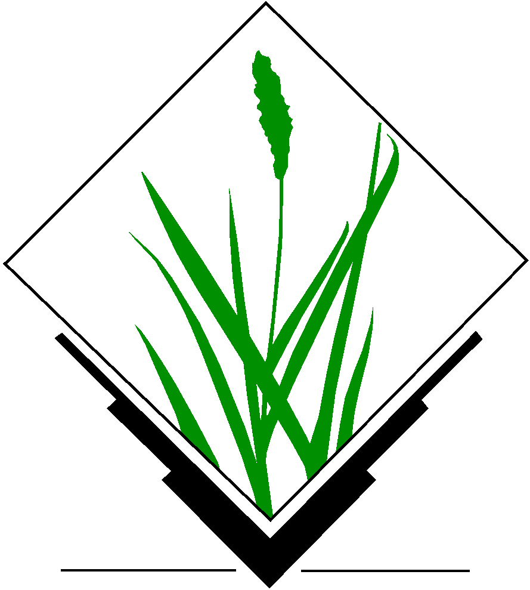

<!--
<section>
    <h2>Motivation for open science</h2>
    <ul>
        <li>Sharing</li>
        <li>Reproducibility</li>
        <li>Only journal papers not enough</li>
    </ul>
    <blockquote style="width: 100%; margin: 0.1em;">
        <p>
            Software [...] developed as part of novel methods is as important
            for the method's implementation [...]
            Such software [...] must be made available to readers upon publication.
        </p>
        <p>
            &mdash;Nature Methods - 4, 189 (2007)
        </p>
    </blockquote>
    
    <p class="credit">Image credit: <a href="https://opensource.com/">opensource.com</a></p>
    Access to information is crucial for science
    Azhar, Gulrez Shah. "Access to information is crucial for science." Lancet 377.9775 (2011): 1404.
</section>
<section>
    <h2>Motivation for open science</h2>
    <blockquote>
        <p>
            The opposite of ‘open’ isn’t closed. The opposite of open is ‘broken.’
        </p>
        <p>
            &mdash;John Wilbanks
        </p>
        cited by Cable Green in The Obviousness of Open Policy 
    </blockquote>
    
    <p class="credit">Image credit: <a href="https://opensource.com/">opensource.com</a></p>
</section>
-->
<section>
    <h3>Availability</h3>
    <ul>
        <li>
            Method and use cases:
            <ul>
                <li>Geomorphometry 2015 Conference Proceedings 
                <li>open access and CC BY-ND
                <li>can be implemented in any GIS-like software
            </ul>
<p>
        <li>
            Software source code:
            <ul>
                <li>
                    <a href="https://github.com/ncsu-geoforall-lab/spatio-temporal-contour-evolution">
                        https://github.com/ncsu-geoforall-lab/spatio-temporal-contour-evolution
                    </a>
                </li>
                <li>GNU GPL <span class="small">(code can be copied and changed)</span></li>
                <li>
                    depends only on GRASS GIS
                    <span class="small">(anybody can have what is needed)</span>
                </li>
                <li>GRASS GIS module <span class="small">(convenient to get, ready to use)</span></li>
               <!-- <li>will be moved to official GRASS GIS repository</li>-->
            </ul>
    </ul>
    
    
    
    
    
</section>
